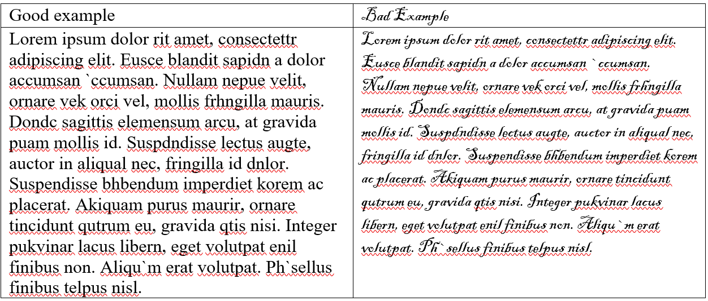

Why is accessibility important?
28% of people have some sort of disability, which is roughly one in four adults. The way disabled people interact with webpages is greatly impacted by accessible means.
And accessibility also helps everyone. Not all accessibility measures help only people. For example, closed captions on YouTube videos, or cutouts in sidewalks to access the road, is enjoyed by everyone.
Making a webpage accessible makes your site able to be viewed by a much greater audience. If you think about it this way; it is easier to implement change at the start of a design, rather than go back and make a change when the need arises. There already is a need, and it is our job to implement accessible friendly designs. For example, using correct headings and lists in a webpage. This might seem like common sense to some, but there are a lot of accessible concepts to keep in mind.
Types of disabilities to keep in mind
Disabilities can come in many shapes and sizes. Some disabilities are ones you cannot even see. It is important to consider all disabilities when creating a web page and take into account the effects some of your content may have on the readers. Some categories of disabilities include physical, sensory, intellectual, developmental, neurological, and psychological.
Physical disabilities: A disability that affects a person’s mobility, dexterity, or stamina. This might make it harder for them to use a keyboard and mouse.
Sensory disabilities: A disability that affects a persons ability to hear, see, or feel. This might make low contrast text harder for low vision people to see, or people might need to use closed captioning in videos.
Intellectual, developmental, Neurological, and Psychological disabilities: A disability that affects the brain and nervous system. There are so many disabilities across a wide spectrum in this category. It is important to keep in mind simple and consistent design techniques when designing an accessible website.

What can you do?
There are two design models you can use when thinking of accessibility. The universal design and the accessible design. Accessible design is the ability for people with disabilities to use something. It is often an afterthought, like a ramp attached to the back side of a building or accessibility overlays. These “add-ons” seem to be helpful but overall can be very unaccommodating and just a terrible design plan. Whereas universal design is the ability for as many people as possible to use something, regardless of disability status. Universal design takes accessibility to a new level, it sees the building or website as broken, and not the people who might struggle to use it. One example is to use a friendly color scheme from the start, rather than including an accessibility overlay for people who need it. When thinking of how you should design something, whether it is a building or a website, it is best practice to use a universal design to reach the most audience members possible.
When it comes to thinking about accessibility, it might seem daunting, like it’s too much work, or not being informed enough to do anything. But it is not just about making sure disabled people are accommodated, it’s making sure everyone can access something, regardless of the obstacles they may face.